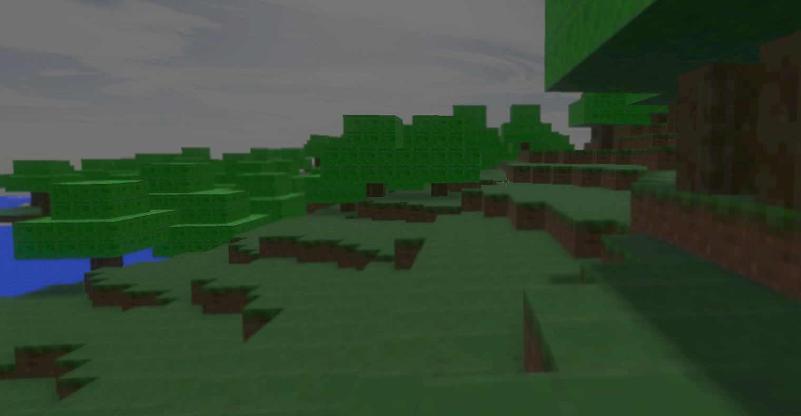

WSSI
v0.1.10
HACKATHON / 2026
Hackathon 2026:
WSSI Web GPU Minecraft Demo
Enemies (0-8)
Resolution
960 x 540
1280 x 720
1920 x 1080
Launch
Show engine logs
Checking WebGPU...
Saved diagnostics
JavaScript is required to launch this demo.